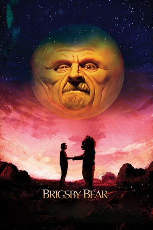

gesehen am 07.02.2018
gesehen am 07.02.2018Alternativ: Brigsby Bear (Originaltitel) gesehen am 07.02.2018
 
 IMDB-Wertung: 7.4 / 10
IMDB-Wertung: 7.4 / 10  Metascore:
Metascore: 
James Pope (Kyle Mooney) kennt lange Zeit nur einen Ort auf dieser Welt: Den Untergrund-Bunker, in dem ihn Ted (Mark Hamill) und April (Jane Adams) großziehen. Die beiden kidnappten den Jungen einst (der glaubt allerdings es seien seine Eltern), erlernen ihm fiktive Mathematik und lassen ihn in dem Glauben, die Außenwelt sei giftverseucht. Doch als eines Tages die Polizei den Bunker stürmt, bleibt James gar nichts anderes übrig als dort hinauszugehen. Er kommt zurück zu seinen leiblichen Eltern (Matt Walsh and Michaela Watkins) und versucht sich mithilfe seiner Schester Aubrey (Ryan Simpkins) in den gesellschaftlichen Alltag zu integrieren. Insbesondere das Kino hat es ihm angetan - bislang dachte er, die selbstproduzierte Kinderserie Teds, „Brigsby Bear“, wäre das höchste aller Gefühle. Fortan verfolgt er gemeinsam mit dem angehenden CGI-Künstler Spencer (Jorge Lendeborg Jr.) das Ziel, den Kostümbären auf die große Leinwand zu bringen.
Jahr: 2017
Dauer: 97 Minuten
FSK: 6
Land: USA Studio: Sony Pictures ClassicsTonspuren: DTS - ,
Untertitel:
Auflösung: 1080p (1920x800) Größe: 4638 MB
Regisseur: Dave McCary
Drehbuch: Kevin Costello
Soundtrack: David Wingo
Darsteller:
 Kyle Mooney als James Pope
Kyle Mooney als James Pope Mark Hamill als Ted Mitchum
Mark Hamill als Ted Mitchum Jane Adams als April Mitchum
Jane Adams als April Mitchum Greg Kinnear als Detective Vogel
Greg Kinnear als Detective Vogel Matt Walsh als Greg Pope
Matt Walsh als Greg Pope Michaela Watkins als Louise Pope
Michaela Watkins als Louise Pope Ryan Simpkins als Aubrey Pope
Ryan Simpkins als Aubrey Pope Jorge Lendeborg Jr. als Spencer
Jorge Lendeborg Jr. als Spencer Claire Danes als Emily
Claire Danes als Emily Andy Samberg als Eric
Andy Samberg als Eric Kate Lyn Sheil als Arielle Smiles
Kate Lyn Sheil als Arielle Smiles Angella Joy als Reporter
Angella Joy als ReporterDatei: X:\2017(A-F)\Abenteuer von Brigsby Bär, Die (2017, FSK6, 1920x800).mkv seit 07.02.2018
Festplatte: HD 2017(A-Z)-2018(A-F)
 Es gibt insgesamt 152 Filme in der Gruppe '2017(A-F)'
Es gibt insgesamt 152 Filme in der Gruppe '2017(A-F)'